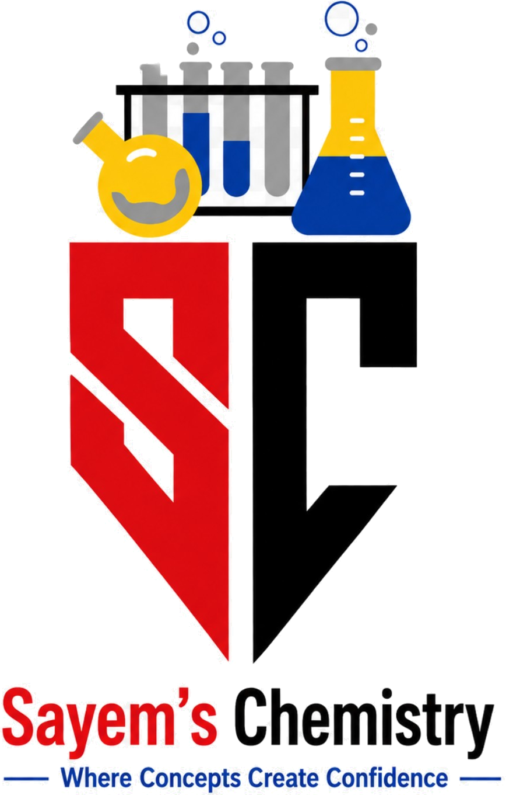

দেখো
মডেল ও অ্যানিমেশনের মাধ্যমে ধারণা তৈরি করো।

Sayem’s ChemistryVirtual Chemistry Labনিরাপদ ডিজিটাল পরিবেশে রসায়নের ধারণা, মডেল ও পরীক্ষার ধাপগুলো ইন্টারঅ্যাকটিভভাবে অন্বেষণ করো।
ল্যাব শুরু করো ↓ HSC অধ্যায়ভিত্তিক ল্যাব ও 3D মডেলএগুলো প্রাথমিক ইন্টারঅ্যাকটিভ ডেমো। বাস্তব পরীক্ষার বিকল্প নয়।
একটি সরলীকৃত শক্তিশালী এসিড–ক্ষার মডেল। ক্ষারের আয়তন পরিবর্তন করে pH-এর পরিবর্তন দেখো।
বিদ্যুৎ প্রবাহের ধারণাগত মডেল—ক্যাথোড ও অ্যানোডে আয়নের গতি দেখো।
H₂O অণুর বাঁকানো আকৃতি এবং পরমাণুর অবস্থান দেখো।
মৌলের প্রতীক দিয়ে খুঁজে প্রাথমিক তথ্য দেখো।
মডেল ও অ্যানিমেশনের মাধ্যমে ধারণা তৈরি করো।
নিয়ন্ত্রণ পরিবর্তন করে ফলাফলের প্রভাব বোঝো।
শেখা বিষয় MCQ ও CQ দিয়ে যাচাই করো।